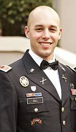

About Me
"I graduated from the United States Military Academy, West Point, NY in 2007 and commissioned as an officer with the Field Artillery. Following graduation, I joined the Artic Paratroopers in Anchorage, Alaska after completing preparations at the Basic Officer Leadership Course, Air Assault, Airborne and Ranger school. I deployed to Afghanistan for a 12 month deployment in 2009 and was selected to assess for an opportunity to join the Special Operations community in 2010, and was later accepted and assigned to 2d Ranger battalion in Seattle, WA. With the Rangers, I deployed twice more to Afghanistan, serving in direct action raids, before exiting the military in 2012 and moving to Houston, Texas. From 2012 to 2016, I worked as a Project Manager for TransCanada to construct natural gas meter stations for product delivery to customers."